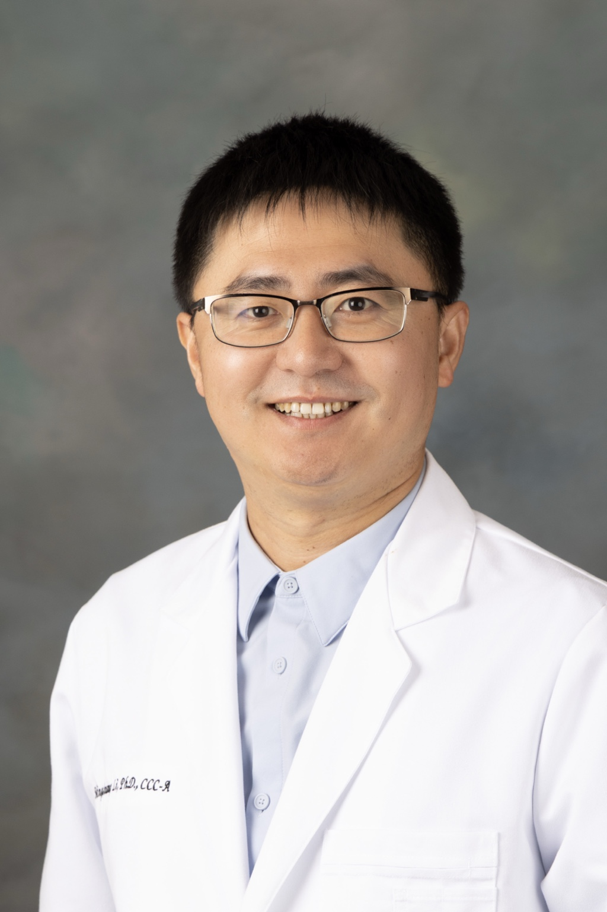

主要研究方向
言语增强
开发有针对性的信号处理方法，以改善背景噪声、口罩声学衰减及听力损失等不利聆听条件下的言语感知。
代表性研究主题：自然语音与 N95 口罩衰减语音的共振峰增强、F2–F3 联合增强，以及噪声类型、信噪比和听者特征的影响。
听觉科学 · 临床听力学 · 听力学临床博士教育
Mingshuang Li
Ph.D., CCC-A

博士、听力学专业助理教授、ASHA 认证及加州执照听力师
沟通障碍与科学系
加州州立大学北岭分校（CSUN）
电子邮箱： mingshuang.li@csun.edu
李明爽，德克萨斯大学奥斯汀分校博士，现任加州州立大学北岭分校（CSUN）沟通障碍与科学系助理教授、ASHA 认证及加州执照听力师，并负责 CSUN 听力科学实验室。他的研究聚焦于不利聆听条件下的言语感知与言语增强，综合运用心理声学方法、信号处理、听觉电生理和临床实践与督导。他同时担任学术期刊专题编辑、客座编辑和同行评审专家。
在 CSUN，他负责听觉科学实验室的研究与学生培养，承担 Au.D. 项目的核心课程教学，指导 Au.D. 毕业研究，并在诊断听力学、听觉电生理和前庭听力学方面提供临床督导。他曾任 Au.D. 项目代理主任，并持续参与学生专业发展。
选择一个领域查看详情
研究
研究愿景
如何通过行为、神经和信号处理方法改善不利聆听条件下的言语感知？
主要研究方向
开发有针对性的信号处理方法，以改善背景噪声、口罩声学衰减及听力损失等不利聆听条件下的言语感知。
代表性研究主题：自然语音与 N95 口罩衰减语音的共振峰增强、F2–F3 联合增强，以及噪声类型、信噪比和听者特征的影响。
研究基础
研究声学线索、语言经验及听觉加工如何影响言语和音高感知。
代表性研究主题：噪声中的元音与辅音感知、共振峰线索敏感性、掩蔽释放、音高加工，以及先天性失歌症人群的听觉加工。
发展中的研究方向
利用听觉脑干反应和频率跟随反应，研究语音及复杂声音的神经编码。
代表性研究主题：语音内容、频谱调制和时间调制对 cABR/FFR 的影响，以及具有临床应用潜力的电生理测量方法。
科研资助项目
学术成果
完整成果涵盖言语增强、噪声中言语感知、听觉心理声学、先天性失歌症及临床听觉科学。
精选学术报告
精选展示在声学、听力学及言语语言听觉科学领域国内外专业会议上的学术报告。
墙报报告，美国声学学会第190届会议，美国宾夕法尼亚州费城。
墙报报告，美国声学学会与日本声学学会第六届联合会议，美国夏威夷州檀香山。
墙报报告，AAA 2025 与 HearTECH Expo，美国路易斯安那州新奥尔良。
主题报告，2024年全美华人学者协会年会，美国加利福尼亚州安大略市。
口头技术报告，美国言语语言听力协会年会，美国马萨诸塞州波士顿。
墙报报告，美国声学学会第184届会议，美国伊利诺伊州芝加哥。
墙报报告，美国声学学会第177届会议，美国肯塔基州路易维尔。
教学与指导
在 CSUN 听力学临床博士（Au.D.）项目中开展核心课程教学、毕业研究指导与临床教育。
临床实践与督导
美国言语-语言-听力协会
CCC-A · 2022 年取得
加州言语-语言病理学、听力学及助听器验配师委员会
临床训练经历包括 Baylor Scott & White 医疗中心、德克萨斯大学言语与听力中心、Austin ENT Associates、Texas School for the Blind and Visually Impaired 以及 Sonova Group。
在 CSUN，他于 Language, Speech, and Hearing Center 开展听力评估、电生理检查、前庭评估及相关听力学服务的临床督导工作。
领导与专业服务
2026 年 1 月至 5 月参与项目运行与学术管理。
负责实验室研究、学生指导与项目发展。
指导学生组织领导、专业发展活动及与听力学界的交流。
为 Frontiers 期刊及《Journal of Speech, Language, and Hearing Research》提供编辑服务。
为 JSLHR、Frontiers in Psychology、JMIR 系列期刊及 Journal of Psycholinguistic Research 审稿。
合作交流
欢迎围绕言语增强、听力技术、噪声中言语感知、FFR/cABR、临床验证以及行为与神经机制之间的关系开展合作。